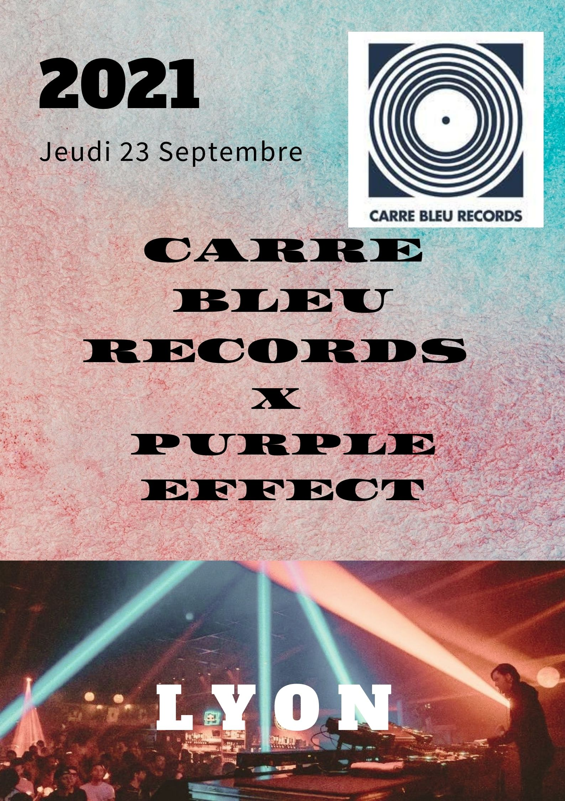

Carré Bleu Records

Carré Bleu Records x Purple Mind
Lyon - 23.09.21 - 19h à 4h
Description
Grande première à Lyon, le label Carré Bleu Records s'associe avec l'association Purple Mind pour vous faire vivre un moment de folie. Rejoignez l'aventure aux nuances de bleu et violet et assistez au plus grand évènements jamais organisez par Carré Bleu.
/!\ Soirée réservée aux personnes majeures, une pièce d’identité vous sera demandée à l’entrée de l’événement (photocopies et photographies non acceptées). L’accès à l’événement n’est plus possible après 1h.
Accessibilité
Cet évènement est accessible aux personnes à mobilité réduite. Pour toutes questions au sujet de l'accessibilité de l'évènemeent, veuillez-contacter Accessibility@tuvsud.com. Nous ferons de notre mieux pour vous faciliter et vous aider apour accèder à l'évènement.
Crise sanitaire
Le pass sanitaire est obligatoire pour accéder à cet événement : le QR code de votre pass vous sera demandé à l’entrée (sur smartphone ou papier).
Billetterie
LYON
23 septembre 2021
19h-4h
Partager via